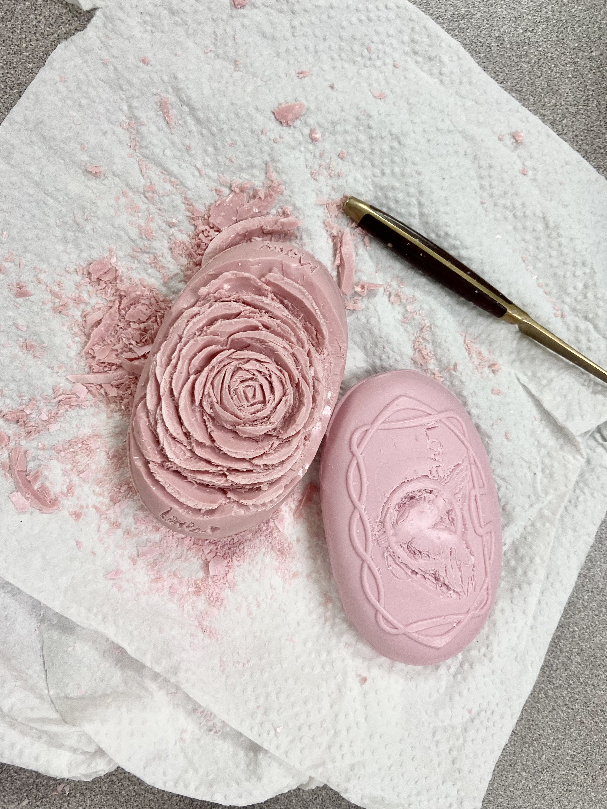

I am currently a student in ICS(International Community School). This is my third year here at ICS. I really love desserts. I think the sceneries on earth are beautiful. Here's a picture of a soap sculpture of a rose I did in Thai class. It was my first attempt at soap sculpting, to be honest, I think it turned out quite cute. Thanks for reading, I hope the day treats you well.
